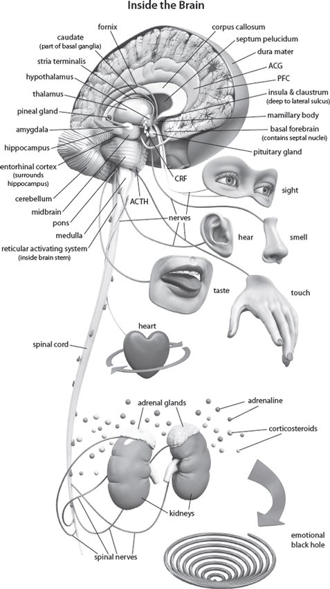

3
Your Choices Change Your Brain
Main Scripture: Do not conform to the pattern of this world, but be transformed by the renewing of your mind. Then you will be able to test and approve what God’s will is—his good, pleasing and perfect will. Romans 12:2 NIV
Linked Science Concept: Through our thoughts we can be our own micro surgeons as we make choices that will change the circuits in our brains. We are designed to do our own brain surgery and rewire our brains by thinking and by choosing to renew our minds.
Our choices—the natural consequences of our thoughts and imagination—get “under the skin” of our DNA and can turn certain genes on and off, changing the structure of the neurons in our brains. So our thoughts, imagination, and choices can change the structure and function of our brains on every level: molecular, genetic, epigenetic, cellular, structural, neurochemical, electromagnetic, and even subatomic. Through our thoughts, we can be our own brain surgeons as we make choices that change the circuits in our brains. We are designed to do our own brain surgery.
This scientific power of our mind to change the brain is called epigenetics and spiritually it is as a man thinks, so is he (Prov. 23:7). The way the brain changes as a result of mental activity is scientifically called neuroplasticity. And spiritually, it is the renewing of the mind (Rom. 12:2).
In chapter 2, I introduced you to the science of epigenetics, which is tangible, scientific proof of how important our choices are; they bring life or death, blessing or cursing; and they reach beyond us to influence the next generations (Deut. 30:19). This is because choices become signals that change our brain and body, so these changes are not dictated by our genes. Our thinking and subsequent choices become the signal switches for our genes. What’s incredible is that genes are dormant until switched on by a signal; they have potential, but they have to be activated to release that potential. They have to be unzipped. (See chap. 2.)
Epigenetics Is an Ancient Science and Spiritual Truth
Epigenetics is referred to as a new science, but actually it is an ancient science that we find throughout the Bible. At its most basic level, epigenetics is the fact that your thoughts and choices impact your physical brain and body, your mental health, and your spiritual development (Deut. 30:19; Ps. 34:11–16; Prov. 3:7–8). And these choices will impact not only your own spirit, soul, and body but also the people with whom you have relationships. In fact, it goes even deeper; your choices might impact the generations that follow: “For the sin of the parents to the third and fourth generation” (Exod. 34:7 NIV; see also Exod. 20:1–6; Num. 14:8; Deut. 5:9).
The decisions you make today become part of the thought networks in your brain. The two copies of the chromosome that you carry in each of your cells contain the entire set of genetic material necessary to make you. An interesting point: A cell in your brain and a cell in your kidney contain the exact same DNA. And while in utero (in the womb), the nascent (emerging, developing) cells differentiate into either a brain cell or a kidney cell only when crucial epigenetic processes turn the right genes on or off. So God has designed perfectly timed epigenetic signals to switch on in the womb as the baby is developing. “Before I formed you in the womb I knew you” (Jer. 1:5).
Our Thoughts Can Impact the Next Four Generations
Science has demonstrated how the thought networks pass through the sperm and the ova via DNA to the next four generations.
One of the first studies showing that an epigenetic signal can affect genetic expression was done with mice that had the agouti gene, which caused them to be fat, have a yellow coat, and have an increased incidence of cancer and diabetes. When the agouti gene occurs in humans, it is related to obesity and type 2 diabetes. In the experiment, just before conception, the agouti mother mice were fed a nutritional chemical called a methyl group in the form of a B vitamin. This acts as a methyl donor, which suppresses the gene expression, with the result that the offspring of this group did not get fat or yellow. So an external signal—the nutritional methyl—changed the generational pattern.[1]
This landmark study fostered a host of studies—including some done on humans—that showed that not only does food change generational patterns, but so does thinking.[2] In 2003 the Human Epigenome project was launched, which showed that epigenetics had moved from being a sideshow back in the 1970s to what is now a main show in the biological arena, putting genetics in a more proportional place.[3]
Scientific Mysteries
Epigenetics explains certain scientific mysteries that traditional genetics never could—for example, why one member of a pair of identical twins develops asthma but the other does not. They have the same genome, so they should respond the same way, but their individual perception of the world (what I term the “I-factor”) as well as their ability to choose means they think and react differently, which alters their genetic expression. Although their genes are the same, their patterns of expression can be tweaked through the signal. And this signal is mainly affected by our reaction to the events and circumstances of life. This is profound and the implications are enormous: the way we react—our thinking and choosing—becomes the signal that activates or deactivates the generational issues in our lives.
The Good, the Bad, and the Ugly
Taken collectively, the studies on epigenetics show us that the good, the bad, and the ugly do come down through the generations, but your mind is the signal—the epigenetic factor—that switches these genes on or off. Therefore, you are not destined to live out the negative patterns of your forebearers—you can instead make a life choice to overcome by tweaking their patterns of expression. Part 2 of this book will show you how.
Taking this further, the Scriptures that tell us the sins of the parents will reach to the third and fourth generation (Exod. 20:5; 34:7; Num. 14:18) seem to imply that we are responsible for the unconfessed sins of our great-great-grandparents. But we can breathe a sigh of relief when we read Deuteronomy 24:16 and Ezekiel 18:19–20, which explain that we are each responsible for our own sins and not those of our ancestors.
I know this seems confusing, because the Scriptures say that, on the one hand, a parent’s iniquity will be visited on the children, but, on the other hand, we are only responsible for our own sins. Here is how it works: Epigenetic changes represent a biological response to an environmental signal. That response can be inherited through the generations via the epigenetic marks. But if you remove the signal, the epigenetic marks will fade.
By the same token, if you choose to add a signal—for example, saying something like, “My mother had depression and that’s why I have depression, and now my daughter is suffering from depression”—then the epigenetic marks are activated. The thinking and speaking out the problem serve as the signal that makes it a reality. I have seen this over the years in my private practice and in my seminars, and even in my own life and the lives of my family and friends, time and time again. If we don’t wake up to these truths, they will catch us when we are not looking, and before you know it you will be living a life you didn’t plan on living. If this is you, here is the good news: You can change.
Predisposition versus Destiny
Herein lies the key: The sins of parents create a predisposition, not a destiny. You are not responsible for something you are predisposed to because of ancestral decisions. You are responsible, however, to be aware of predispositions, evaluate them, and choose to eliminate them.
The epigenetic marks in our genes that may predispose us to smoke, eat too much of the wrong foods, be negative, or worry can change. This can cause, for example, the genes for obesity to express too strongly or the genes that control stress reactions to switch off, shortening your life as well as decreasing your quality of life and your peace (soul harmony) and happiness. We also are responsible for our own choices and can apply the work of the cross and confess, repent, and eliminate future sinful choices.
In addition, our choices (the epigenetic signals) alter the expression of genes (the epigenetic markers), which can then be passed on to our children and grandchildren, ready to predispose them before they are even conceived. So our bad choices become their bad predispositions.
The negative alternative is that you can choose to accept the predispositions and live into them, but don’t forget that you have to take responsibility for that as well. This very act of accepting the predispositions and living into them becomes the signal that activates you to become a fat and yellow agouti mouse. Just the addition of a methyl group signal changes the life of the offspring of the agouti mice. In the same way, the addition of a positive attitude signal or a memorized and meditated-upon Scripture signal can change the expression of the gene.
What your mind creates only your mind can take away.
Scientific Evidence of God’s Grace
Another scientific piece of evidence of God’s grace can be seen in a structure in the middle of the brain called the hippocampus. This seahorse-shaped structure, which processes incoming information, facilitates the conversion of short-term memory to long-term memory, deals with spatial memory, and also helps control our stress response.
Scientists have found that in a loving and nurturing environment, acetyl epigenetic markers increase on the genes in the hippocampus that keep us calm and peaceful. The more acetyl markers, the more these peace genes in the hippocampus express and dampen the stress response. A toxic choice produces the opposite effect: The acetyl markers reduce and the methyl markers increase, causing us to have less peace.[4]
So the methyl markers switch off genetic expression and acetyl markers switch on genetic expression. The “switching on or off” is based on the signal, and we can choose to switch. Sometimes we want to switch off—for example switching off the obesity genes in the agouti mice and human research. But we want to switch on good genetic expression—for example the stress control gene in the hippocampus. Whether we switch on happiness, peace, and good health or switch on anxiety, worry, and negativity, we are changing the physical substance of the brain.
The Brain Reorganizes throughout Our Lifetime
In 1930, Santiago Ramón y Cajal[5] wrote that the nerve pathways are fixed and immutable, but now scientists know that the brain has the amazing ability to reorganize throughout life, changing its structure and function through mental experience alone. If the brain can get worse by constantly focusing on the problem, then the brain can get better by understanding how to eliminate and replace the problem.[6]

The Neuroplasticity Paradox
So neuroplasticity can operate for us as well as against us, because whatever we think about the most will grow—this applies to both the positive and negative ends of the spectrum. For example, in post-traumatic stress disorder (PTSD), neuroplasticity has worked against the person. He or she has experienced a crushing mental event that fundamentally changed the meaning of their life and altered the brain structurally because of the neuroplasticity of the brain. During the trauma, the person’s mind was not thinking in soul harmony (Col. 3:15 AMP), so consequently he or she did not choose, process, or react correctly to the event—making the thought that became wired in a jumbled toxic mess. As the person relives the event over and over, it wires itself deeper into the mind, becoming a main filter and disrupting normal function.[7] Flashbacks—reliving the bad memory many times a day—strengthen the circuit, making it worse and more debilitating.
We Can Use Neuroplasticity to Renew Our Minds
How do we fix this? In part 2, I will explain this in depth and supply a simple explanation and a chart of my theory in chapter 8, “The Geodesic Information Processing Theory,”[8] upon which my approach is based. The overriding concept is to apply neuroplasticity in the correct direction by rewiring the event with the positive thinking of Philippians 4:8: “Finally, brothers, whatever is true, whatever is honorable, whatever is just, whatever is pure, whatever is lovely, whatever is commendable, if there is any excellence, if there is anything worthy of praise, think about these things” (ESV).
Thus the person consciously chooses, preferably under the leading of the Holy Spirit, to bring the memory into consciousness where it becomes plastic enough to actually be changed.
This means the physical substrate of the memory becomes weakened, vulnerable, malleable, and able to be manipulated. The person then chooses to replace the crushing mental event with the implanted word of God, which saves the soul (James 1:21). The person, as though an outsider looking in through a window, will observe the toxic, traumatic memory as a weakening and dying experience but, at the same time, observe the new healthy experience that is growing. In practicing this daily, the person wires the healthy new thoughts ever more deeply into the mind.
Neurons that don’t get enough signal (the rehearsing of the negative event) will start firing apart, wiring apart, pulling out, and destroying the emotion attached to the trauma. In addition, certain chemicals like oxytocin (bonds and remolds chemicals), dopamine (increases focus and attention), and serotonin (increases feelings of peace and happiness) all start flowing around the traumatic thoughts, weakening them even more. This all helps to disconnect and desynchronize the neurons; if they stop firing together, they will no longer wire together. This leads to wiping out or popping those connections and rebuilding new ones. I explain the practical side of this process in part 2.
More Encouragement from Science
There are even more encouraging pieces of information about neuroplasticity. For example, Universalists believe logic and language are learned at fixed ages, and if you pass that fixed age, you can’t learn. Plasticity research proves them wrong.[9] People with learning disabilities can rewire their brains to perceive sound better.[10] My own patients with brain injuries and learning and emotional disabilities, as well as the teachers and students I have worked with in schools, showed significant changes when they did the mental training in my Switch On Your Brain technique.[11]
The media creates incorrect perceptions of scientific discoveries. They may cover a study that sensationalizes that our brain does x, therefore you will do x, as though you cannot think for yourself. This is so wrong. Those who believe you are just your brain believe you have no free will. The active mind changes the brain; the brain is the passive part of existence. As we think, we are making the brain fire in different patterns and combinations, and whenever we make the brain fire differently, we change the brain. Epigenetics research demonstrates that our lifestyles and environment can transform the way our genes are expressed, and evidence from this field shows us we are not being controlled by the structure of our brains.[12]
One brain generates more energy (electrical impulses) in one day than all the cell phones on the planet.[13] So we have the power to make changes; we do not have a spirit of fear, but of love, power, and a sound mind (see 2 Tim. 1:7). Our default mind mode—our soul, which is our intellect, will, and emotions—is powerful, strong, and driven by principles of love. Don’t let the media, doctors, or other people in your life convince you otherwise. You have the power in your mind to change the negative, toxic manifestations. Our minds shape the world. This is what neuroplasticity is all about: change. Neuroplasticity is God’s design for renewing the mind.
Our Perceptions Count
Our perception of the environment plus how we manage our environment controls our bodies and lives. So if you change your perception, you change your biology. You become the master of your life instead of a victim. But don’t do it without Christ; remember, he is the vine from which we grow (John 15:5). The billion-dollar self-help industry does not have sustainability[14] because it misses the basic elements required for success and change: Primarily, it is not connected to the vine. These practitioners try to teach successful living without the originator of successful living: God. Secondly, there is a lot of visualization and verbalizations in their advice, but the intent of the heart is not considered, leaving a disconnect between what is being said and what is really believed and felt deep down. This is called cognitive dissonance. Thirdly, there is often very little real action involved. Action on both a spiritual and scientific level is required for change to take place.
Research also shows that there is a negative side to positive self-statements and affirmations, showing that individuals with low self-esteem felt worse after repeating positive self-statements.[15] Don’t become part of that statistic.
The world may tell us that the mind is what the brain does, but God tells us that the brain will do what the mind tells it to do. And when your spirit, under the leading of the Holy Spirit, controls your soul, then the gold standard of thinking is achieved. This is a very different perspective from the traditional view, which tells us we are machines that just need parts changed and chemicals added. Choices are real; you are free to make choices about how you focus your attention, and this affects how the chemicals and wiring of your brain change and function.
Scientists are now proving that the relationship between you and how you understand and perceive your inner thought life, your community, and God has a huge impact on how your brain works.[16] Moment by moment of each day you can choose who you will be in the next moment, and these choices are captured in the resultant thought networks you build. In that process, the precepts of Scripture should be the overarching, undergirding, and foundational framework. They should be so entrenched that our attention is viewed through them and them alone as we form a view of ourselves that God created us to be.
Personally, my spiritual life informs my scientific life. As Joshua 1:8 says, insight, mindfulness, and wisdom come through meditation on God’s truth versus rote study of information. I want to shape my world around God’s truth because I know as a scientist and a believer, paying attention to my thoughts and purposefully focusing my mind leads to great transformations.
You Have the Power to Change
Your patterns of genetic experience don’t determine what you are; you do. How you live, the cultural environment you live in, whatever you immerse yourself in, your beliefs and the beliefs of those around you, how you interact with those people, your faith and how you grow it, what you expose yourself to—all of these lead to differences in the way you focus your attention and have a direct effect on how your proteins are synthesized, how your enzymes act, and how your neurochemicals work together. If you don’t believe you have the power to change your thoughts and control your choices, you are not going to do it.
Doing your own brain surgery or neuroplastic intervention of toxic thinking and renewing your mind is based on regular exercising of your brain; change takes place over time through continual persistence. Intervention of the mind changes the brain physically, chemically, structurally, and functionally. Research shows there is no more effective way to produce localized and specific changes in the brain than behavioral or mental intervention. Since psychosocial factors modulate the course of certain diseases—such as cardiovascular disease, diabetes, and asthma—this means the things going on in the environment get into the mind, changing the brain and having an impact on the body. So it is vital for us to pay attention to the precepts laid down in God’s Word. Understanding how God designed neuroplasticity to work for and against us will help us move forward.
Chapter 3 Summary